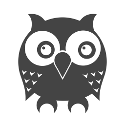
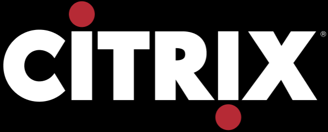
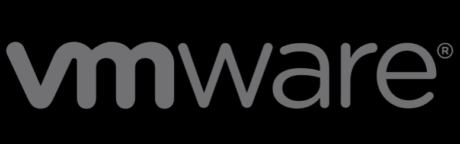
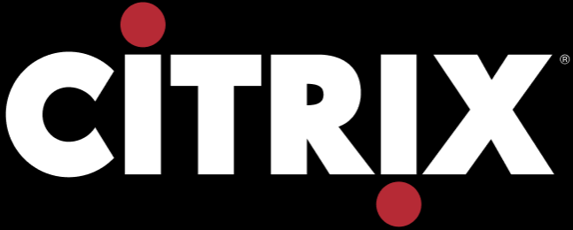
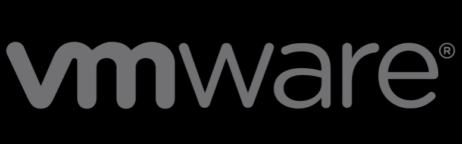

Hi, my name is
Camillia Hanaan Amin.
I am a Computer Science student at Toronto Metropolitian University,
with interests in Full-Stack development and Data Science.
I am a goal-oriented, well-rounded student who is motivated by challenges
and eager to learn new technologies. I am also passionate about diversity
in technology, and providing students in underrepresented groups with the
resources and mentorship that they need to thrive in CS.
I am currently seeking Summer and Fall 2023 opportunities!
Experience
Systems Analyst, Virtual Desktop Computing
Royal Bank of Canada | May 2022 - Aug 2022
- Actively supported the infrastructure for over 3000 servers that enables RBC employees in access the RBC network from any remote location. Exercised strong interpersonal, critical thinking, and troubleshooting skills and a solid understanding of how the myVirtual environments are hosted.
- Learned how to use various desktop virtualization tools, like Citrix Studio, Citrix Director, Citrix Provisioning Console, ControlUp, REACT, and the IGEL Unified Modeling System, as well as hypervisor technologies like VMWare and HyperV.
- Resolved over 200 incidents affecting myVirtual users. Effectively gathered relevant session information to pinpoit the factors contributing to their issue, such as the end-point device, connection type, Citrix profile, the VDI host, or the XenApp server they are connecting to. Adapted to each user’s technical expertise to resolve their incident efficiently and in a way that guarantees end-users satisfaction.
- Implemented changes to maintain and update the servers for each line of business. Verified that all changes applied to master servers are in compliance with security measures and that they have the required App-V packages, hotfixes, patches and application versions, before replicating the master image across the datacenters.
- Collaborated with various teams and contacts to gather approvals before flagging the image as being ready to promote to production.
- Reduced the inventory of 194 external and outdated IGEL OS thin-client computers in North America by 81.4% in 2 weeks. Rigorously contacted users to confirm the status of their computers and to push updates, prior to the FTP connection termination date.
VP of Events & Operations
Women in Computer Science @ TMU | May 2021 - Present
- Organize numerous events such as the WiCS Meet & Greet, Fall Social, Tech Industry Networking Night, Alumni Internship Panel, and Hack Night, to increase students' access to valuable connections in the industry and provide opportunities to meet other students in CS
- Prepare event proposals, plans, and timelines, delegating appropriate tasks to the VP Finance, VP Outreach, marketing team, and events team, ensuring that they are completed by on time
- Collaborate with the President, VP Outreach, VP Finance, industry partners and other student groups at TMU, thoroughly addressing roadblocks throughout all stages of event logistics
- Demonstrated excellent verbal and written communication skills while delivering presentations to more than 100 students and faculty within the Ryerson Science Society and event attendees
- Effectively articulated the organization's mission, values, and aspirations by compiling a Sponsorship Package, increasing WiCS's professional presence and access to funding
Skills
Technical Skills



 



Soft Skills
Communication
Critical Thinking
Problem-solving
Adaptability
Organization
Collaboration
Time Management
Leadership
Public Speaking
Initiative
Projects
Flight Reservation System
A program that simulates a Flight Reservation system and allows users to interact through the command line to see available flights, reserve and cancel a seat. Utilizes the Java Collection Framework and Object-Oriented Programming principles such as encapsulation, polymorphism, inheritance, and various data structures.
Memory Card Game
A memory card game with a deck of 16 cards built with HTML, CSS, Javascript, and Bootstrap.
HR Payroll Database Management System
A DBMS built with SQL that allows HR that stores employee-related information, such as personal contact, manager, department, employee bank account, payroll, employment history information. Implemented views that may represent the information accessible to certain employees within HR.
Five Number Summary Bot
The Five-Number Summary is useful for producing a standard boxplot model to depict the distribution of a data set. This is a simple bot that uses Python and the Discord API to perform standard Five-Number Summary calculations.
Awards
Renewable Entrance Scholarship
Awarded by Toronto Metropolitan University | 2020 - 2022
Consistently maintained a CGPA above 4.15 with a full course load.
2nd Place in the RBC Final Rookie Battlesnake
RBC Battlesnake Summer Tournament | Aug 2022
Collaborated with 3 other coop students to develop a strategy for our battle snake, Overworked Student, in preparation for the RBC Battlesnake Tournament. Strategized, coded, debugged, and thoroughly tested the snake.
Made an Impact Award
Awarded by RBC | Aug 2022
Volunteered as a Technical facilitator for the RBC BDL Virtual Coding Camp, introducing young children to the fundamentals of programming through interactive games and lessons.
Faculty of Science Dean's List for 2021-2022
Awarded by Toronto Metropolitan University | Jun 2022
Maintained a good academic standing with a minimum 3.5 GPA for the academic year with a full course load over the Fall and Winter terms.
Faculty of Science Dean's List for 2020-2021
Awarded by Toronto Metropolitan University | Jun 2021
Maintained a good academic standing with a minimum 3.5 GPA for the academic year with a full course load over the Fall and Winter terms.